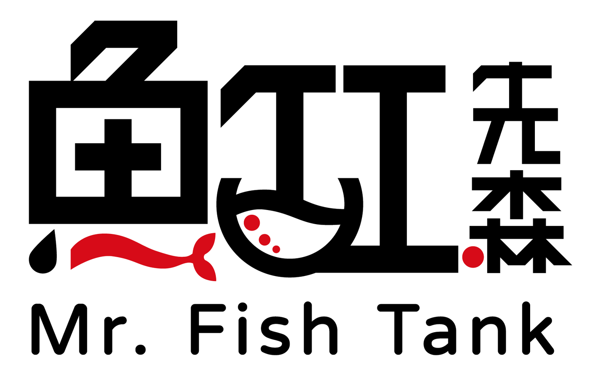

一位魚缸先生，三種水的風景。PLANTED · FRESHWATER FISH · MARINE REEF
魚缸先生有三種缸型的設計概念網站。點選一張卡片進入；進到網站後，也能從頁面最上方的切換列隨時改看其他缸型。
水草、石材與沉木構成的自然風景，像把一座森林放進客廳。
以觀賞魚為主角，乾淨的線條與留白，適合辦公室、店面與日式空間。
珊瑚、礁岩與海水魚，把一片海帶進生活；可切換深藍模式，滑鼠移動會帶起水波與氣泡。